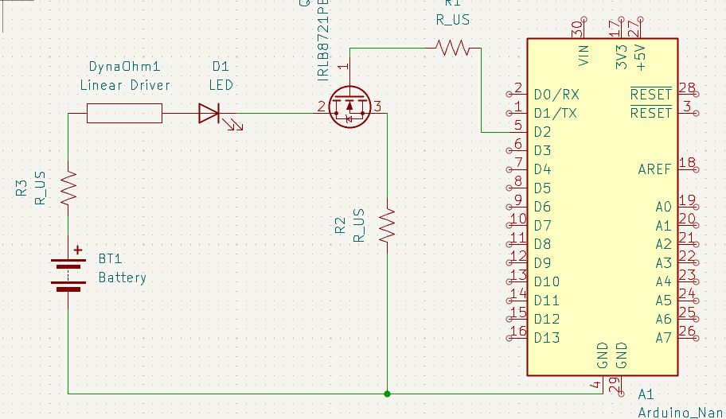
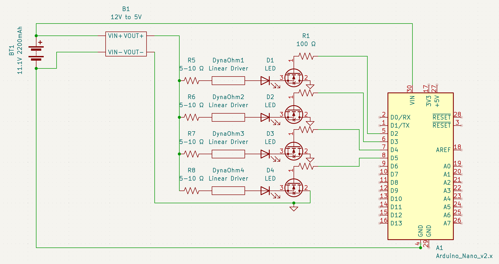
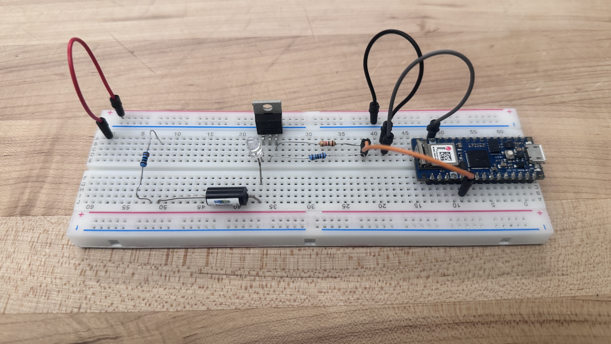
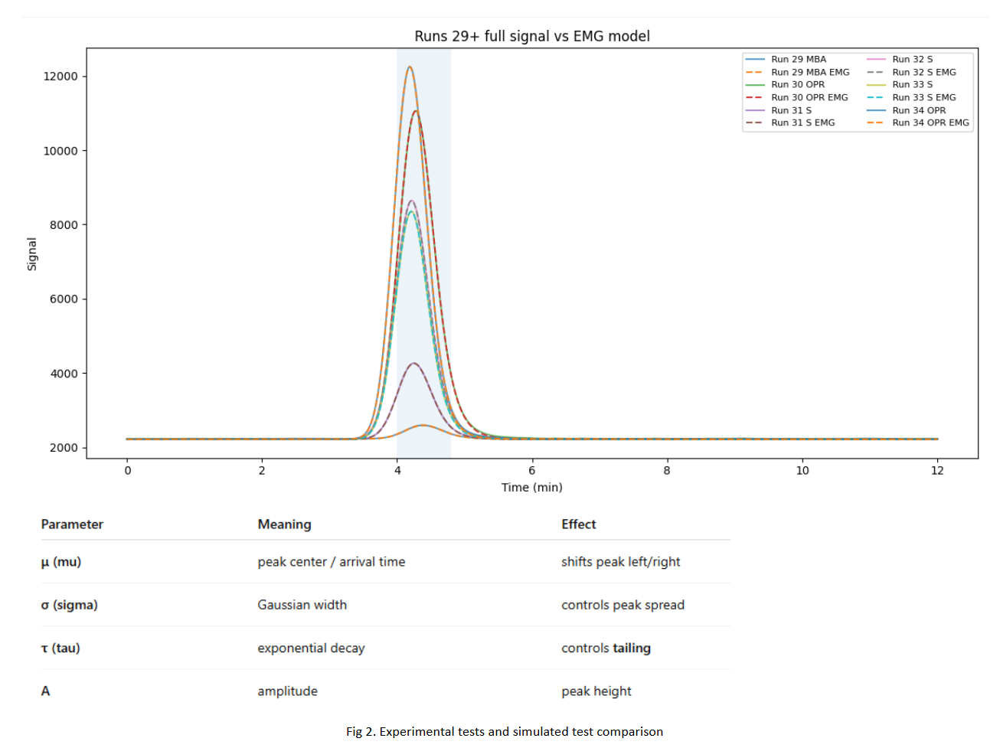

04 / Sensing / System integration
Atmospheric Mercury Detection System
Compact airborne mercury-detection payload concept involving flow-path redesign, optical sensing subsystems, and LED-control electronics.

This project explored how a broken bench-scale mercury detector could be understood and reconfigured into a compact payload concept for future drone-based sensing. My contribution focused on reverse engineering the workflow, evaluating detector interfaces and electrical architecture, developing LED-control electronics, and supporting subsystem modeling.
My work concluded at the subsystem-development stage. The final integrated airborne payload was not completed during my involvement.
RESEARCH CONTEXT
Overview
The project began with teardown and study of a broken Brooks Rand Model 3 mercury detection system. The aim was to understand its sensing chain and identify the functions that a smaller redesign would need to preserve.
Development focused on key subsystems and early electronics and modeling work, establishing groundwork for a compact sensing package rather than replicating the entire instrument at once.
MY CONTRIBUTION
My work
- Helped reverse engineer the Brooks Rand Model 3 through teardown and study.
- Contributed to translating the bench-scale architecture into a smaller airborne concept.
- Evaluated PMT, socket, and high-voltage interface options.
- Helped define top-level power and electrical signal architecture.
- Designed single-channel LED intensity-control circuitry and expanded it to a multi-LED design.
- Validated the LED-control concept on a breadboard.
- Supported early mercury signal and transport modeling.
SYSTEM STUDY → ELECTRONICS → PROTOTYPING
Subsystem development
01 / REVERSE ENGINEERING
Understanding the sensing chain
Teardown and system study helped map airflow, trapping, filtering, and optical detection. The architecture above identifies the major functions that would need to remain connected in a smaller redesign.
Intake & conditioning
Atmospheric air intake with particulate, desiccant, and carbon filtering.
Concentration & detection
Pre-concentration and amalgamation trapping linked to a fluorescence baffle chamber and PMT-based optical detection.
Flow path
Pump-driven transport through the sensing pathway, catalyst filtering, and exhaust.
02 / DETECTOR & ELECTRICAL INTERFACES
Detector & electrical architecture
Another part of my work involved evaluating detector hardware and defining how the major electrical subsystems would interface. I compared photomultiplier tube and high-voltage socket options based on spectral response, electrical compatibility, cost, and integration requirements, then helped establish the top-level power and signal architecture for the compact sensing system.
Detector selection
Compared PMT options for UV sensitivity, interface compatibility, dark current, cost, and availability.
High-voltage interface
Evaluated socket and high-voltage configurations compatible with the selected PMT.
System architecture
Helped define power domains, control electronics, sensing interfaces, and subsystem relationships.
03 / ELECTRONICS DEVELOPMENT
LED-control electronics
A major part of my contribution was circuitry for controlling LED brightness and excitation intensity in the optical subsystem. I began with a single-channel design using microcontroller control and MOSFET switching, then expanded the approach to multiple LEDs.
Single-channel concept
The initial driver established a compact, adaptable control approach for one LED.

Multi-channel expansion
The expanded design repeated the control channels for multiple LEDs, supporting future optical-subsystem integration.

04 / PHYSICAL PROTOTYPING
Breadboard testing
The LED-control concept was tested on a breadboard before moving toward formal board integration. This quick prototype confirmed that the brightness/intensity-control approach worked as expected.
The result established the circuit concept at the subsystem level. It did not constitute a completed optical instrument or integrated drone payload.

05 / MODELING SUPPORT
Signal modeling
Experimental mercury-detector pulses were compared against an exponentially modified Gaussian (EMG) model to characterize peak arrival time, width, tailing, and amplitude. This provided an intermediate modeling step toward a more physics-based representation of mercury release, transport, and detection.
- μ
- Peak center / arrival time
- σ
- Gaussian width / peak spread
- τ
- Exponential decay / tailing
- A
- Amplitude / peak height

CONTRIBUTION SUMMARY
Technical groundwork
Teardown & sensing-chain analysis
Single- to multi-LED control
Breadboard-validated concept
HANDOFF / INCOMPLETE INTEGRATION
Project status
My involvement concluded during subsystem development. The workflow had been studied, LED-control electronics designed and prototyped, breadboard testing completed successfully, and parts ordered for further assembly.
At that point, the broader effort was awaiting additional components and continued integration. The complete sensing instrument and airborne payload were not finished during my time on the project.